Tutorial paso a paso, con capturas reales del proceso completo — errores incluidos.
Antes de tocar código, hace falta una app registrada en developers.facebook.com/apps. Los pasos previos a la primera captura:
En esta pantalla Meta ya generó el número de prueba y expone dos identificadores clave que vas a necesitar para configurar ArjuyWhatsApp: el Phone Number ID y el WhatsApp Business Account ID. Ambos están tapados en la captura porque son datos reales de la cuenta de prueba.
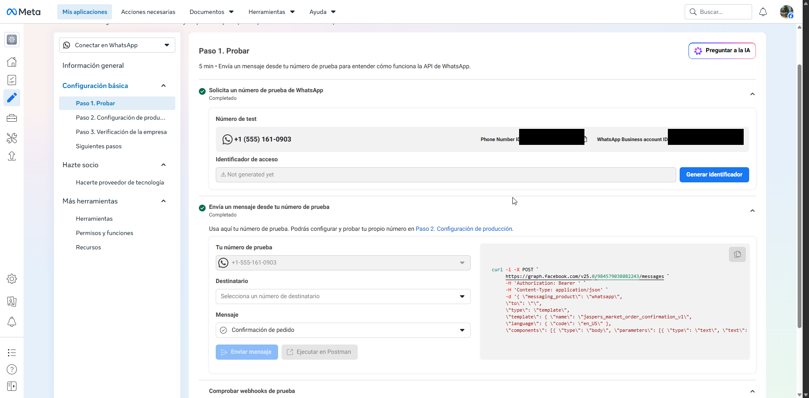
Estos dos valores van directo a la configuración de la librería: PhoneNumberId y BusinessAccountId. Todavía no hace falta generar el Access Token — eso es el siguiente paso.
Con el botón Generar identificador (o Generar nuevo identificador si ya había uno) Meta emite un Access Token temporal, válido por 24 horas. Es el que se usa para las primeras pruebas — para producción hace falta un token de sistema permanente, pero eso es tema de otro tutorial.
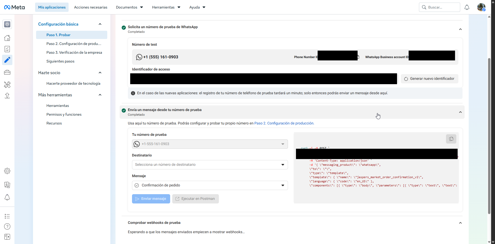
curl de ejemplo (que repite el token en el header Authorization) están redactados.Con los tres datos (AccessToken, PhoneNumberId, BusinessAccountId) ya se puede completar la sección ArjuyWhatsApp del appsettings.Development.json del proyecto ArjuyWhatsApp.Sample.Api.
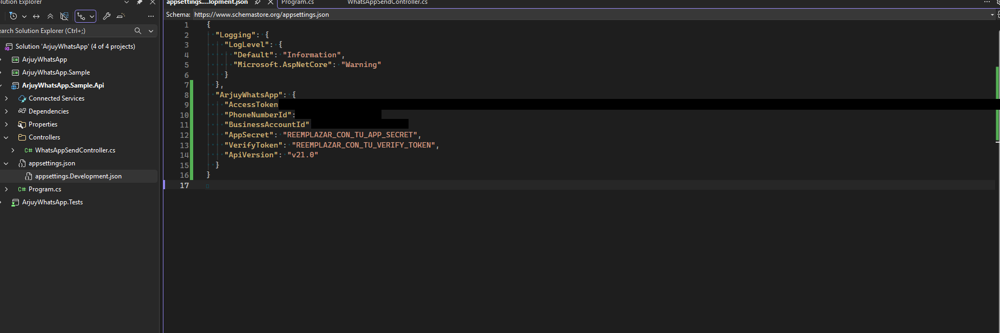
¿Por qué appsettings.Development.json y no appsettings.json? Porque el .Development.json está en el .gitignore del proyecto (o debería estarlo) — es el lugar pensado para secretos y configuración local que nunca se commitea. El appsettings.json normal sí va al repo, y por eso trae placeholders como REEMPLAZAR_CON_TU_APP_SECRET en lugar de valores reales.
{
"ArjuyWhatsApp": {
"AccessToken": "<tu access token temporal>",
"PhoneNumberId": "<tu Phone Number ID>",
"BusinessAccountId": "<tu Business Account ID>",
"AppSecret": "REEMPLAZAR_CON_TU_APP_SECRET",
"VerifyToken": "REEMPLAZAR_CON_TU_VERIFY_TOKEN",
"ApiVersion": "v21.0"
}
}Antes de confiar en que todo estaba bien conectado, pusimos un breakpoint dentro del método interno SendMessagePayloadAsync — el que arma el HttpRequestMessage y lo manda a la Graph API — para inspeccionar el payload real antes de que saliera y la respuesta real de Meta al volver.
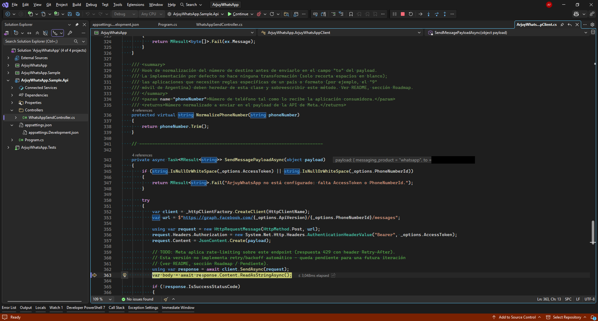
SendMessagePayloadAsync. El datatip muestra el payload que se está por enviar (número de teléfono redactado).Al continuar la ejecución, la respuesta cruda de Meta se pudo inspeccionar con el Text Visualizer de Visual Studio sobre la variable body:
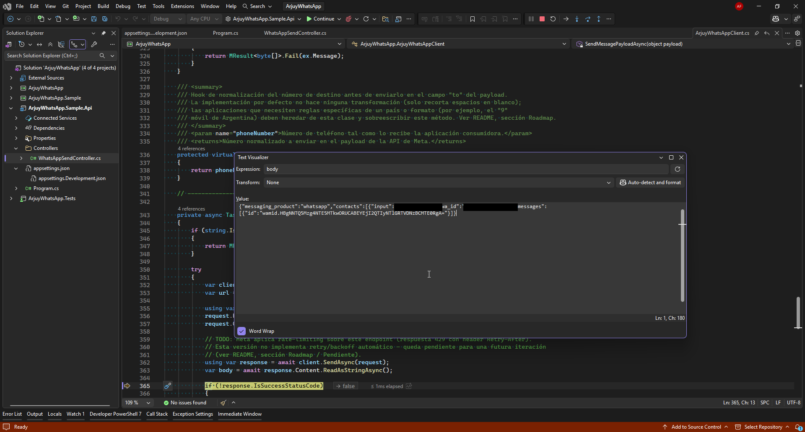
contacts[].input, contacts[].wa_id (redactados) y el wamid del mensaje enviado.Y del lado del consumidor, probando el endpoint de ejemplo desde Swagger UI (proyecto ArjuyWhatsApp.Sample.Api), el resultado fue un MResult<string> exitoso con el wamid del mensaje:
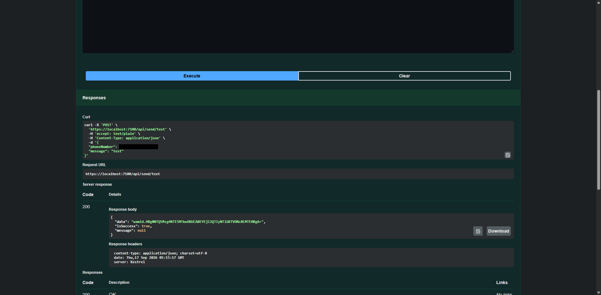
/api/send/text (número de teléfono redactado).MResult devuelve el wamid. Falta la otra mitad: recibir mensajes entrantes.
Para que Meta pueda pegarle al webhook, necesita una URL pública — y en desarrollo la app corre en https://localhost:7100. La solución más simple es un túnel con ngrok:
ngrok http https://localhost:7100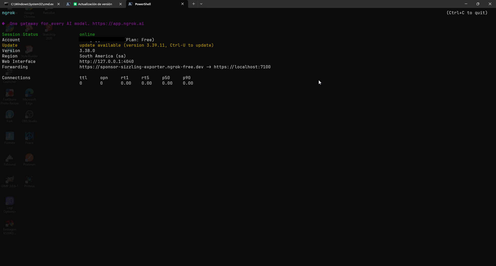
Forwarding muestra la URL pública que apunta a localhost:7100 (email de la cuenta redactado).La URL que importa es la de Forwarding (algo como https://<subdominio>.ngrok-free.dev → https://localhost:7100). Esa es la base que se usa en el siguiente paso para armar la Callback URL del webhook.
En Paso 2. Configuración de producción → Configurar Webhooks hay que cargar dos campos: la URL de devolución de llamada (la URL de ngrok + la ruta del endpoint, por ejemplo /api/webhooks/whatsapp) y el Identificador de verificación (el mismo valor que VerifyToken en el appsettings.Development.json).
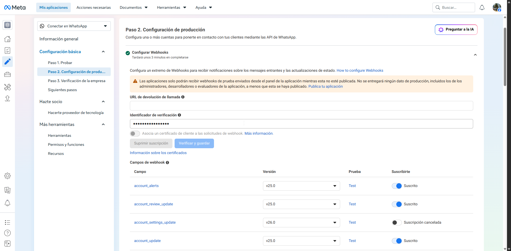
Al cargar la URL de ngrok y el verify token y darle a Verificar y guardar, Meta devolvió un error genérico de validación:
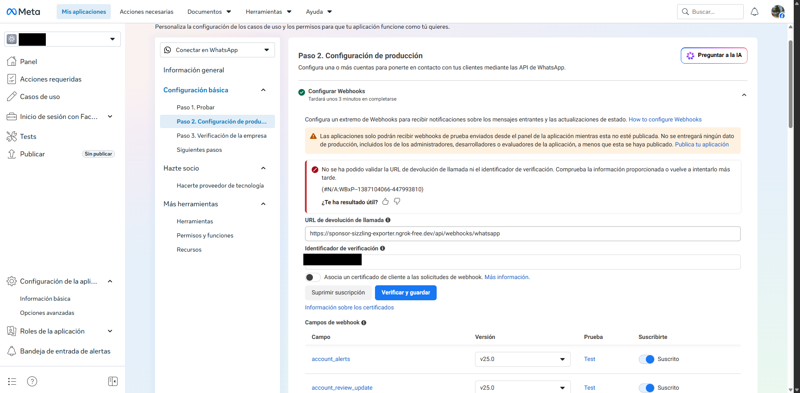
GET del webhook para el handshake de verificación, y si no hay nada escuchando del otro lado del túnel de ngrok, la validación falla con este mensaje poco descriptivo. La lección: antes de tocar "Verificar y guardar", confirmá que dotnet run (o F5 en Visual Studio) esté efectivamente corriendo.
Con la app corriendo y el mismo túnel de ngrok activo, se volvió a intentar exactamente lo mismo:
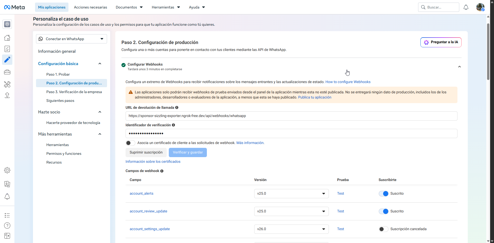
Configurar la URL del webhook no alcanza: también hay que suscribirse explícitamente al campo messages dentro de Campos de webhook (la tabla lista muchísimos campos — account_alerts, calls, flows, etc. — y por defecto ninguno relevante para mensajería está activado).
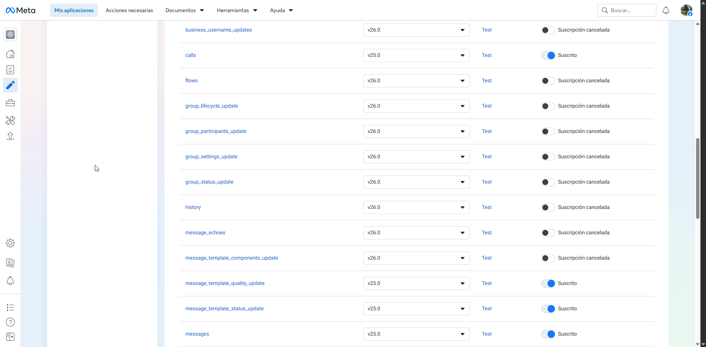
messages.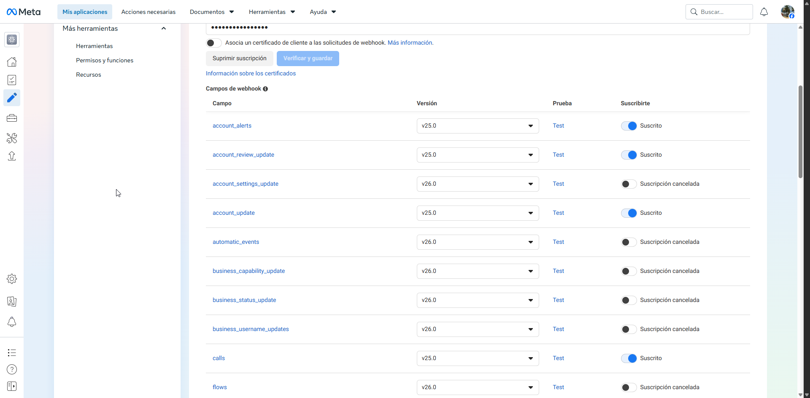
messages con el toggle Suscrito activado — a partir de acá Meta reenvía los mensajes entrantes al webhook.Con el webhook configurado y suscripto, tocaba probar la recepción real: mandar un WhatsApp desde un celular real al número de prueba y ver si ArjuyWhatsApp lo recibía y disparaba el MessageReceived (o el IWhatsAppMessageHandler registrado por DI).
SendTextAsync) pensando que eso iba a "activar" también la recepción — pero enviar un mensaje desde la API no genera ningún webhook entrante, porque el webhook solo dispara con mensajes que llegan al número de WhatsApp, no con los que salen desde él. La confusión se resolvió al caer en la cuenta de que hacía falta mandar un WhatsApp real desde el celular personal hacia el número de prueba (+1 555 161-0903 en este caso), no repetir el envío de prueba.
Una vez mandado el mensaje real desde el celular, la recepción se confirmó verbalmente en la sesión de trabajo (el breakpoint del lado del webhook se disparó con el payload entrante correcto) — no hizo falta una captura adicional para este paso, ya que fue una verificación puntual en tiempo real.
MapArjuyWhatsAppWebhook() registra los dos endpoints (GET de verificación y POST de recepción) con Minimal APIs, delegando en IArjuyWhatsAppClient.VerifyWebhookChallenge y IArjuyWhatsAppClient.ProcessWebhookAsync. Si necesitás lógica adicional en el endpoint — autenticación extra, logging particular, otro status code, etc. — podés escribir tu propio Controller llamando exactamente a los mismos dos métodos:
[ApiController]
[Route("api/webhooks/whatsapp")]
public class WhatsAppWebhookController : ControllerBase
{
private readonly IArjuyWhatsAppClient _whatsAppClient;
public WhatsAppWebhookController(IArjuyWhatsAppClient whatsAppClient)
{
_whatsAppClient = whatsAppClient;
}
// Handshake de verificación que hace Meta al configurar/re-verificar la Callback URL.
[HttpGet]
public IActionResult Verify(
[FromQuery(Name = "hub.mode")] string mode,
[FromQuery(Name = "hub.verify_token")] string verifyToken,
[FromQuery(Name = "hub.challenge")] string challenge)
{
var result = _whatsAppClient.VerifyWebhookChallenge(mode, verifyToken, challenge);
// text/plain, no JSON: Meta exige recibir hub.challenge tal cual, sin envoltorio.
return result is null
? StatusCode(StatusCodes.Status403Forbidden)
: Content(result, "text/plain");
}
// Recepción de mensajes/eventos entrantes.
[HttpPost]
public async Task Receive(CancellationToken cancellationToken)
{
using var reader = new StreamReader(Request.Body);
var rawBody = await reader.ReadToEndAsync(cancellationToken);
var signatureHeader = Request.Headers["X-Hub-Signature-256"].ToString();
var result = await _whatsAppClient.ProcessWebhookAsync(rawBody, signatureHeader, cancellationToken);
// Meta espera un 200 rápido siempre que la firma sea válida, aunque algún mensaje
// individual haya fallado río abajo. Solo se responde distinto de 200 cuando
// ProcessWebhookAsync falló por firma inválida.
return result.IsSuccess
? Ok()
: StatusCode(StatusCodes.Status403Forbidden);
}
} IArjuyWhatsAppClient — no hay magia oculta en ninguno de los dos.